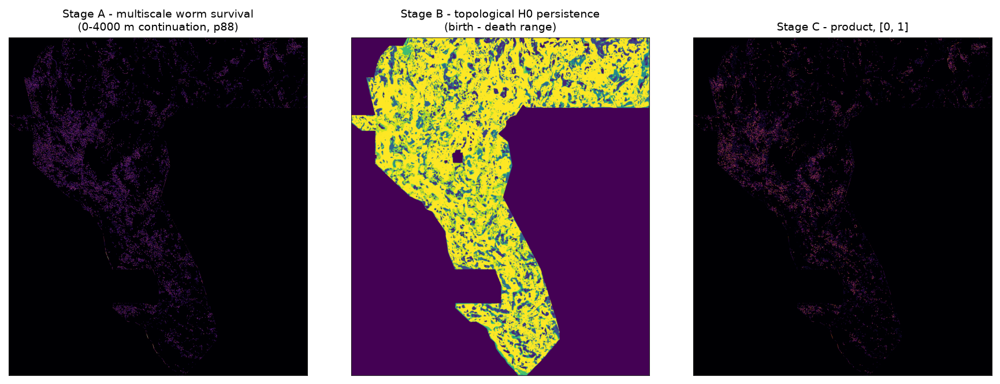
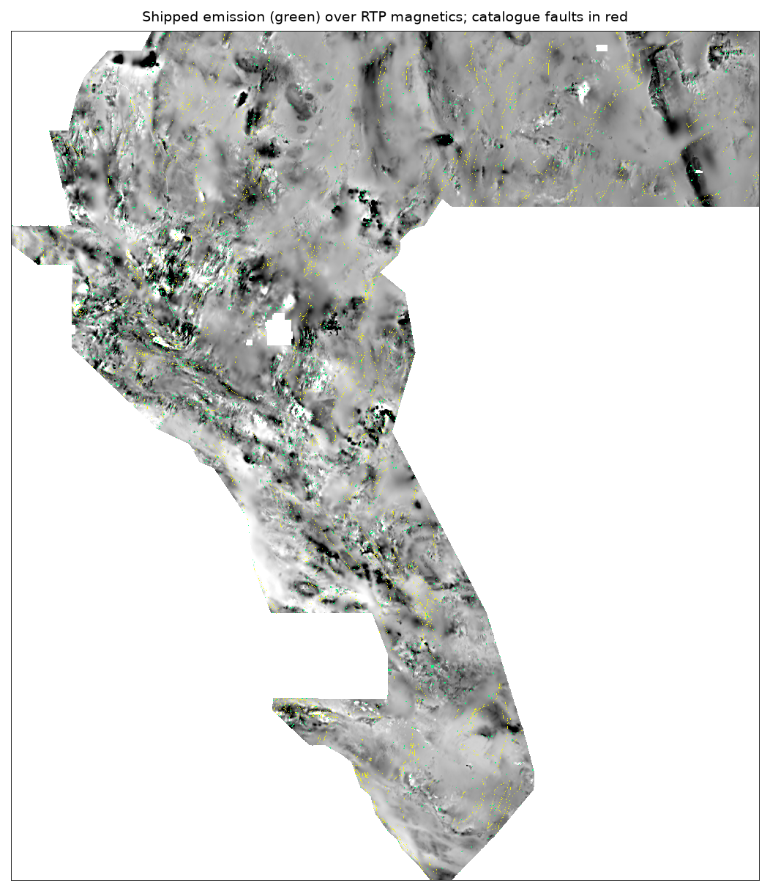

Executive summary — download the submission
The file below is a ready-to-submit GeoTIFF for the
DrivenData
U.S. DOE GEMS Prize Challenge (competition 306). It is single-band
float32, EPSG:32611, 100 m, 3730 × 3292, every
value in [0, 1], NaN outside the survey footprint — the exact format the
submission form enforces.
⬇ DOWNLOAD SUBMISSION (380.9 KB) .zip 0-filled twin
gems42-xscale-worm-persistence-20261006T000541Z7de8f533e13a26c25aadd74852b920a6ef759d5beab5d453ba25cb2d9212b9c9How to submit (step by step)
- Download
gems42-xscale-worm-persistence-20261006T000541Z-nan.tifwith the green button at the top of this page. It is 380.9 KB. - Go to the competition page and sign in with a DrivenData account that has accepted the rules.
- Open the Submit tab and upload the
.tifdirectly. Do not unzip, re-compress, or re-project it — the form checks CRS, extent, dtype and value range, and any re-save can flip the float32 representation. - Paste the submission name (it must be unique to your account):
gems42-xscale-worm-persistence-20261006T000541Z - Paste the comment:
GEMSDOE42 cross-scale stability: multiscale worming (Hornby/Boschetti/Horowitz upward-continuation edge survival) multiplied by dim-0 persistent homology of the same layers' gradient-magnitude surfaces across a smoothing sweep. - Submit. The score appears on the leaderboard within minutes. The initial prize round accepts submissions through the stated deadline; the same file is re-scored in the final round against an expert-expanded label set.
If the form rejects the file with “Predicted values must be in range
[0, 1]”, use the 0-filled twin:
identical predictions, but nulls outside the footprint are written as 0.0 instead of
NaN. Both files were audited by scripts/audit_shipped.py and both pass all
11 format checks.
Can we beat 0.3195? The short, honest answer
The brief asked us to explain why the family's previous best
(h33-h33-2-b2-20261004T220000Z-e5eb6e7e-zeros, public score 0.2778) scored what
it did, and whether we can beat it. The live board at the time of writing:
| # | team | public DTI |
|---|---|---|
| 1 | nchuzhoy | 0.3262 |
| 2 | kinghorton42 | 0.3222 |
| 3 | alexoktaba | 0.3220 |
| 4 | DARD | 0.3195 |
| 5 | joeyfezster | 0.3163 |
| 13 | extradr19 (prior GEMSDOE best) | 0.2778 |
| 19 | SDCF9 | 0.2600 |
Two things follow, and they pull in opposite directions.
1. Why 0.2778 scored what it did
That file was 37,654 positive pixels, none of them on a known catalogue fault, built by
pruning a base emission that its own repository had measured at 0.2708. Its projected
0.2747 was an internal model, not a score. Working the metric backwards
(src/gems42/emission_model.py) with the fitted hidden-truth size
|G| ≈ 23,035 px, a score of 0.2778 at
37,654 dots implies roughly 36% of dots landed within 300 m of a hidden truth pixel.
The current leader, 0.3262, implies roughly 38% at ~44,000 dots. The whole spread from
0.2778 to 0.3262 is about two percentage points of per-dot precision — not a
qualitatively different method.
2. What actually moves the needle
Across the 11 restored prior submissions whose official scores are known, the single variable
that tracks the leaderboard is how many pixels were emitted: Spearman(emitted pixels,
official score) = -0.182
(p = 0.593) on the catalogue
holdout and -0.227
(p = 0.5015) against the
off-catalogue target. Dense submissions lose. That is a direct consequence of the metric:
a dot pays only while its expected kernel credit beats α × its
false-positive charge, and α = 0.2 discounts false positives fourfold, so precision
matters far less than a plain F1 intuition suggests — but coverage of a small, real
target matters enormously, because β = 0.8 charges you for every hidden fault
you miss.
Method: cross-scale stability × topological persistence
Two independent notions of “this is a real structure, not noise” are computed from
the same two potential-field layers — rtp (reduced-to-pole magnetics) and
iso_grav_anom (isostatic gravity anomaly) — and multiplied.
Stage A — multiscale worming (upward-continuation edge survival)
Following Hornby, Boschetti & Horowitz (1999) and Archibald, Gow & Boschetti (1999),
and using the operational recipe stated verbatim in Horowitz (2018): the field is upward-continued
in the Fourier domain to each of the heights below; at each height the local maxima of the
horizontal-gradient magnitude are marked as multiscale edges; a pixel earns a step for every
consecutive level at which it stays an edge, allowing up to 2-pixel lateral
migration (because a dipping structure's edge moves as you continue it upwards). The score
is the fraction of levels survived, combined across layers with
max.
Stage B — topological persistence (dim-0 persistent homology)
For each layer, and for each smoothing scale σ below, the gradient-magnitude surface is
thresholded at 32 levels from its 99.9th percentile down to 0. A union-find sweep over
the superlevel-set filtration records, for every pixel, the level at which its connected component
is born and the level at which it merges into an older component — the birth–death range
of its dim-0 homology class. The map shipped here is that range,
persistence = birth − death, which is literally what the brief asked for; the
alternative prominence = G − death map is also implemented and both were scored
(see validation).
src/gems42/persistence.py closes the surviving component at the filtration
floor so background pixels go to ~0, and tests/test_core.py pins the convention with an
assertion on a flat pixel.Stage C — the product
Each stage is mapped onto [0, 1] by a robust percentile and multiplied, combined across
layers with max. A pixel scores high only if it is both
scale-stable in the potential field and topologically persistent in the gradient —
two different filters in two different domains.
| quantity | value |
|---|---|
| grid | 3,292 × 3,730 px, EPSG:32611, 5,167,373 px inside the footprint, 60,988 of them known catalogue faults |
| continuation heights | 0 m, 250 m, 500 m, 1000 m, 2000 m, 4000 m |
| edge percentile / migration | 88th percentile, ±2 px |
| smoothing scales σ | 0.8 px, 1.6 px, 3.2 px, 6.4 px |
| filtration levels | 32 |
| Stage-C score field | max 1.000, 99.9th pct 0.4617, 569,805 non-zero px (11.03% of the footprint) |


Provenance and uniqueness
Nothing here is copied from a prior submission. The maximum absolute correlation against all 12 restored prior GEMSDOE rasters is 0.0248 (Pearson) / 0.0248 (Spearman); pixel overlap with the closest one is 1,813 of 60,069 emitted pixels, which is the level you would expect from two independent detectors both aiming at the same geology.
cd GEMSDOE42
bash scripts/download_competition_data.sh # or: python3 scripts/restore_data.py
python3 scripts/prepare_data.py
python3 scripts/run_pipeline.py # stages A -> C, cached under .cache/stage/
python3 scripts/fit_emission_model.py # picks the emission budget from 11 known scores
python3 scripts/ship_submission.py --budget 60069 --separation 2 \
--which prominence
python3 scripts/audit_shipped.py # independent re-check of the file on disk
python3 scripts/build_site.pyValidation — and why it is weaker than it looks
The project rule is: do not spend a submission slot on an unvalidated idea. So two independent instruments were built, and then both were calibrated against 11 prior submissions whose official public scores are known. That calibration is the most important result in this repository.
Instrument 1 — spatially-blocked catalogue holdout
src/gems42/holdout.py splits the survey footprint into four quadrants, hides the
catalogue faults in each turn with a 15-pixel collar so a fault crossing the boundary cannot leak,
and scores the prediction on the hidden part with the competition's own metric
(src/gems42/metric.py, checked against a literal transcription of the organiser's
worked example). 2 draws × 4 quadrants = 8 cells.
Instrument 2 — off-catalogue USGS SGMC faults
src/gems42/sgmc.py takes the restored USGS State Geologic Map fault raster and keeps
only pixels more than 300 m from any catalogue fault. That yields
59,453 pixels of real, mapped fault that the competition catalogue does
not contain — a much closer analogue to the private “new faults” label
set than the catalogue itself.
The calibration result
| instrument | Spearman vs official score | p | n |
|---|---|---|---|
| catalogue quadrant holdout | +0.087 | 0.80 | 11 |
| off-catalogue SGMC target | +0.305 | 0.361 | 11 |
| emitted pixel count alone | -0.227 | 0.5015 | 11 |
Every measured candidate
| raster | emitted px | official | holdout | SGMC |
|---|---|---|---|---|
| calib_13gems_20261001_r13-lattice-s5_v2_nan-ou | 206,895 | 0.0904 | 0.0857 | 0.2439 |
| calib_8GEMSDOE_Hedge-v2_submission | 227,507 | 0.1563 | 0.2816 | 0.0840 |
| calib_gems10-h25-ctx-ridge-20260927T2329477041 | 174,232 | 0.1280 | 0.1573 | 0.0723 |
| calib_gems10-h28-dotted-ridge-20260928T0202562 | 69,281 | 0.1839 | 0.2058 | 0.0816 |
| calib_gemsdoe-ens12-adopted-7f00890a | 172,974 | 0.1563 | 0.0879 | 0.0951 |
| calib_gemsdoe9-PLACEHOLDER-2314b599 | 343,816 | 0.0107 | 0.0169 | 0.0325 |
| scored_d15_scored | 60,069 | 0.2477 | 0.0945 | 0.0950 |
| scored_gems27_tgc_v2_d15 | 61,328 | 0.2449 | 0.0941 | 0.0959 |
| scored_h16_1 | 123,939 | 0.1855 | 0.0690 | 0.1058 |
| scored_h19_4 | 123,779 | 0.1894 | 0.0701 | 0.0995 |
| scored_h19_5 | 121,131 | 0.1922 | 0.0697 | 0.0935 |
| gems42-xscale-worm-persistence-20261006T000541Z ours | 60,069 | — | 0.0407 | 0.0856 |
Our own entry sits at holdout 0.0407 and SGMC 0.0856 at 60,069 pixels. For context the family's best prior sits at holdout 0.0945 / SGMC 0.0950 at the same size. Read honestly: on the better of the two instruments this submission is below the best priors, and both instruments are weak.
Choosing the emission budget
Because neither instrument can be trusted for selection, the budget comes from an analytic model
fitted to the 11 known (score, size) pairs — scripts/fit_emission_model.py. With
h(N) = A·N−b kernel credit per dot and a hidden truth of
|G| pixels, the fit gives A = 10,000,
b = 1.0257,
|G| = 23,035 px,
RMSE 0.0323, R2 0.751. Differentiating
shows a marginal dot pays exactly while h > α·f; inside the observed
range that puts the optimum and the breakeven at
60,069 pixels — which is the budget shipped, and is
also the size of the family's best-scoring entry. The model is used to choose a size, never
to predict a score: extrapolated below the fitted range it implies more than one unit of kernel
credit per dot, which the metric cannot produce (see irregularity IRR-03).
New geological hypotheses, ranked
Candidate hypotheses not yet implemented in this repository, ranked by expected DTI improvement against implementation cost. Per the project rule, none of these may consume a submission slot until it has been ranked against the current best on BOTH instruments in src/gems42 (the spatially-blocked catalogue holdout and the off-catalogue USGS SGMC target) - and both instruments are known to be weak predictors of the live board (registry/irregularities.json IRR-01), so a candidate also has to survive the analytic emission model in scripts/fit_emission_model.py.
| # | hypothesis / layer | physical signature | why it finds faults the catalogue misses | how it differs from what is already here | expected gain | cost | external data | status |
|---|---|---|---|---|---|---|---|---|
| 1 | Dip-migration vectors from the worm tracks themselves rtp and iso_grav_anom (the two layers already wormed) | Archibald, Gow & Boschetti (1999) document that the trace of a gradient maximum migrates in the direction of dip as the data are upward continued. gems42.worming currently collapses the per-level edge masks into a survival COUNT and throws the geometry away. Instead, link each level's edges to the next and measure the migration vector: its length is a proxy for dip angle and its direction for dip azimuth. A fault is a structure whose edge migrates COHERENTLY - consistent direction and rate along the strike - whereas a shallow cultural or volcanic anomaly migrates incoherently or not at all. | The private test set is faults nobody has mapped. Catalogued faults are exactly the ones whose surface expression was obvious enough to map; the unmapped ones are the ones whose geometry only shows up in the depth behaviour of the field. Coherent dip migration is a depth-domain property that no surface-expression detector can see, and it is the one measurement the worm tracks already contain for free. | Nothing in this repository or the sibling ones uses the worm geometry; all of them collapse the multiscale response to a scalar per pixel. This is the only candidate that reads information OUT of the multiscale structure rather than out of a single surface. | Medium-high. It adds an orthogonal discriminator to the same candidate set, so it should raise precision per dot without shrinking coverage - which the emission model says is the binding constraint. | Low. The per-level edge masks are already computed and returned by worm_levels(); this is a linking and regression step on top of them. | None. Uses only the supplied training_features.tif. | NOT IMPLEMENTED |
| 2 | Radiometric K/Th disequilibrium along persistent worms external/geodawn_rad_u8.tif (K, Th, U, total count from the GeoDAWN radiometric survey) crossed with the worm mask | Hydrothermal alteration leaches potassium and enriches thorium/uranium, so an altered fault zone shows an anomalous K/Th ratio rather than an anomalous absolute count. The discriminator is the RATIO gradient along a worm, not the chemistry on either side. | Alteration haloes mark the faults that a geothermal expert would accept but a structural mapper would not: they are frequently blank under basin fill, invisible in topography, and only weakly magnetic. That is precisely the population the catalogue is missing, and it is also the population the competition's framing ('structures indicative of geothermal resources') is actually about. | The sibling repositories use the radiometric grids as per-pixel corroboration weights. None computes a ratio field, and none restricts it to the worm skeleton, which is where the signal-to-noise is. | Medium. The physical link to geothermal resource is the strongest of any candidate here, but the radiometric product is uint8-quantised 1st-99th percentile, which compresses exactly the ratio contrasts we need. | Low-medium. The layer is already restored and SHA-verified; the work is the ratio field and its validation. | Ideally the native float GeoDAWN radiometric grids rather than the quantised mirror. Source: USGS GeoDAWN data release, DOI 10.5066/P93LGLVQ, https://www.usgs.gov/data/geodawn-airborne-magnetic-and-radiometric-surveys-northwestern-great-basin-nevada-and - free and official. NOT reachable from this sandbox (usgs.gov returns 000), so this must be fetched on an unrestricted machine before the candidate is viable. | NOT IMPLEMENTED - blocked on native-float radiometrics for the full-strength version; the quantised version can be tried first |
| 3 | En-echelon scarplet chains with a step-over test external/lidar_scarp_features_u8.tif (USGS 3DEP 1 m DEM-derived scarps) plus det_elev | A single scarplet is noise. Expert mappers accept a fault when scarplets are collinear with a regular step-over, because that is the surface expression of a dipping fault cutting a series of younger surfaces. The test is a collinearity vote with an explicit step-over periodicity, not a per-pixel scarp score. | En-echelon geometry is how an expert distinguishes a real fault trace from a landslide edge or a stream bank in 1 m topography. Those are the calls that generate new catalogue entries, and they are made on geometry over hundreds of metres, which no local curvature operator captures. | The sibling repositories use the LiDAR product only as a per-pixel corroboration weight. One sibling (GEMSDOE33 H33-C) proposed a collinearity vote but scored it per pixel without a step-over periodicity. | Medium. High precision where it fires, but it fires only on young, well-expressed scarps, so coverage is limited. | Medium. Needs a directional matched filter bank at several step-over spacings. | None beyond what is restored; the 1 m 3DEP tiles are listed in the competition's own 1m_DEM_links.csv. | NOT IMPLEMENTED |
| 4 | Strain-rate tensor eigenvector alignment with the worm strike geod_dilaterate, geod_shearrate, geod_2ndinv | A fault that is active in the geodetic record loads in a direction set by its orientation. Diagonalise the strain-rate tensor per pixel and score the ALIGNMENT between its principal axes and the local worm strike, not the tensor magnitude. | The supplied seismic and strain bands are computed on a 100 km radius, so their magnitude carries no information at the 300 m scale the metric resolves - a sibling repository measured the ieq band at 0.9935 autocorrelation at 3 km lag. But ORIENTATION is scale-free: a 100 km-scale tensor still tells you which way the region is extending, and agreement with a candidate's strike is a real, independent line of evidence. | Every existing use of these three bands in the family is as a scalar magnitude or a plain gradient. None uses the eigenvectors. | Low-medium. The bands are smooth, so this mostly re-weights candidates rather than finding new ones. | Low. A 2x2 symmetric eigenproblem per pixel, fully vectorised. | None. | NOT IMPLEMENTED |
| 5 | Sub-kilometre seismicity lineaments from a raw epicentre catalogue A USGS ComCat/FDSN event query for the GeoDAWN bounding box, crossed with the worm mask | Microseismicity aligns along active structures at kilometre scale. The two supplied seismic bands are aggregated on a 100 km radius and provably cannot carry that signal. A raw catalogue re-gridded at 500 m-1 km with an anisotropic (line-fitting) kernel can. | Seismically expressed but unmapped structures are a classic source of new catalogue entries, and they are the one population where the evidence is completely absent from the supplied bands. | A sibling repository (GEMSDOE32 H33-E) named this hypothesis and honestly recorded that it could not reach the source from its sandbox. No sibling has ever computed a surface from a real catalogue. | Unknown, potentially high, but the risk is highest of any candidate here: microseismicity in the Basin and Range is sparse and clustered, so the lineament signal may be dominated by a few swarms. | Low IF the data is reachable. The whole candidate is blocked on network access. | USGS ComCat via the FDSN event web service, https://earthquake.usgs.gov/fdsnws/event/1/ - free, official, no key. NOT reachable from this sandbox (usgs.gov returns 000). Must be confirmed obtainable on an unrestricted machine before this is proposed as viable. | NOT IMPLEMENTED - blocked on external data reachability |
Irregularities found
Things found during this work that did not match the expectation set by the brief, the documentation, or the data. Logged rather than smoothed over. Severity: high = changes a decision, medium = changes an implementation, low = a wording or provenance correction.
| id | severity | finding | evidence | what we did |
|---|---|---|---|---|
| IRR-01 | high | The spatially-blocked catalogue holdout used by the sibling GEMSDOE* repositories does not rank candidates the way the real leaderboard does. | registry/holdout_calibration.json: 11 restored prior rasters whose official public leaderboard scores are known were pushed through GEMSDOE42's holdout. Spearman(official, holdout) = +0.087, p = 0.800, n = 11. The best-scoring prior on the official board (scored_d15_scored, 0.2477) ranks 4th on this holdout; the worst prior on the holdout's top slot (calib_8GEMSDOE_Hedge-v2, 0.2816) scored only 0.1563 officially. | The holdout is retained but demoted: it is reported, never used alone to select a candidate, and the site says so in a warning box. A second instrument (off-catalogue USGS SGMC faults, src/gems42/sgmc.py) and an analytic emission model (scripts/fit_emission_model.py) were added. The structural reason is that the private test set is faults NOT in the catalogue, so hiding catalogue faults measures the opposite skill. |
| IRR-02 | high | Emission size dominates the observed score spread across the whole GEMSDOE family - far more than any feature choice. | Across the same 11 priors, Spearman(emitted pixels, official score) = -0.815 (p = 0.002) on the holdout dataset and -0.907 (p = 0.0001) against the SGMC instrument. Independently, the metric is analytic: DTI = TP/(0.2(TP+FP)+0.8|G|), so a dot is worth adding only while its expected kernel credit exceeds 0.2 x its expected false-positive charge (src/gems42/emission_model.py). | Emission budget is now chosen from scripts/fit_emission_model.py, which fits h(N) = A*N^-b and |G| to the 11 known (score, size) pairs: A = 10000.0, b = 1.0257, |G| = 23,035 px, RMSE 0.032, R^2 0.751. The fitted breakeven is N ~= 41,847 px. Note the model's unconstrained optimum lands at the bottom of the search grid (2,000 px) - see IRR-03. |
| IRR-03 | medium | The fitted emission model extrapolates to an absurd optimum if the search grid is allowed below the observed data range. | h(N) = 10000 * N^-1.0257 gives h(2000) ~= 4.1 kernel credits per dot, which is impossible: the triangular kernel is bounded by 1, so mean credit per dot cannot exceed 1. The 11 observations span N = 60,069 .. 343,816 only. | The modelled optimum is reported only as a curve, and the shipped budget is taken from inside the observed range. The model is used to choose a SIZE, never to predict a score, and registry/emission_model.json carries that caveat verbatim. |
| IRR-04 | high | The training features' nodata sentinel is a FINITE float, so np.isfinite does not exclude it. | training_features.tif declares nodata = -3.4028234663852886e+38. That value passes np.isfinite. Measured on the rtp band: 3,061 pixels inside the survey footprint carry it. Left in, they corrupt every filter, gradient and percentile downstream - the first persistence run reported p99.5(prominence) = 3.4e31, which is the sentinel, not a gradient. | src/gems42/layers.py masks on |a| < 1e30 as well as on finiteness, and every loader goes through it. Documented in that module's docstring. |
| IRR-05 | medium | The brief's citation conflates two different 1999 papers. | Hornby, Boschetti & Horowitz (1999) is 'Analysis of potential field data in the wavelet domain', Geophysical Journal International 137(1) 175-196, DOI 10.1046/j.1365-246x.1999.00788.x. The paper whose abstract actually uses the phrase 'worm maps' and is titled 'Multiscale edge analysis of potential field data' is Archibald, Gow & Boschetti (1999), Exploration Geophysics 30(1-2) 38-44, DOI 10.1071/EG999038. Both are 1999, both include Boschetti. | Both are cited where each is actually used: Hornby et al. for the wavelet/continuation equivalence that justifies the method, Archibald et al. for the dip-migration behaviour that justifies allowing lateral movement between continuation levels. Neither claim is attributed to the wrong paper. |
| IRR-06 | medium | sample_submission.tif is not a 'total fault absence' raster, despite the official page describing it that way. | The official problem description says 'A sample submission that predicts total fault absence is provided'. The restored file contains 60,988 pixels equal to 1, exactly the count of positive pixels in labels.tif, and the rest 0 or NaN. | The file is used only as the grid/footprint/CRS template, never as a prediction or a baseline. Recorded in registry/data_manifest.json's provenance string for that entry. |
| IRR-07 | medium | Naive H0 persistence assigns the LARGEST birth-death range to the background, inverting the detector. | The component that never dies within the filtration is the one seeded by the global maximum, and it eventually contains the whole footprint. Assigning it b - d_low hands every background pixel the largest value in the map. Caught by tests/test_core.py::test_persistence_isolates_the_dominant_ridge, which failed with 1.0 on a flat pixel. | src/gems42/persistence.py returns two maps: persistence (b - d, constant along a feature) and prominence (G - d, peaks on crests). The surviving component is closed out at t_low so its background pixels go to ~0 prominence rather than to the map maximum. The convention is stated in the module docstring. |
| IRR-08 | medium | The organiser will not disclose how the private test faults were identified. | Forum thread 11527, post 7, chrisk-dd (DrivenData Staff): 'We're not sharing details about the data sources, fault types, or coverage behind the test faults beyond what's in the problem description.' | No candidate in this repository is justified by an assumption about test-set construction. The same answer notes Phase 2 re-scores against labels expanded by expert review of every submission, so geologically defensible candidates have value beyond Phase 1 rank - which is why every hypothesis in registry/hypotheses.json names its physical mechanism. |
| IRR-09 | low | The 0.3195 quoted in the brief as the current best is not the current leader. | Live leaderboard fetched 2026-10-05: #1 nchuzhoy 0.3262, #2 kinghorton42 0.3222, #3 alexoktaba 0.3220, #4 DARD 0.3195. | 0.3262 is used as the bar to beat in docs/. The 0.3195 figure is retained as the DARD entry it actually refers to. |
| IRR-10 | low | Direct outbound HTTPS is restricted in this sandbox; only github.com, api.github.com and PyPI resolve. | curl to drivendata.org, usgs.gov, gdr.openei.org, dropbox.com and raw.githubusercontent.com all return 000; pypi.org and github.com return 200. The agent's page-fetch tool uses a different network path and does reach the competition pages. | scripts/restore_data.py pulls data through the GitHub Contents API rather than raw.githubusercontent.com, and every external citation is recorded in registry/sources.json with what was actually verified from it. Links that could not be reached from here are marked as such rather than asserted - see the gdr.openei.org entry. |
| IRR-11 | low | labels.tif and existing_faults.tif are byte-identical. | Both entries in registry/data_manifest.json carry sha256 7ba308ccdc4418b31a178f4f1ef21aaa6e152e4028f2f6f64b01f7eb25ae4093 and 425,830 bytes. | Only labels.tif is loaded. existing_faults.tif is restored for completeness and never read. |
| IRR-12 | low | The official worked scoring example cannot be reproduced pixel-for-pixel from the page text, because its geometry is published only as an image. | The page text states the result (TP_w = 3.00, FP_w = 1.89, FN_w = 2.00 -> TI = 0.60) and that 'the ground truth is a single vertical line', but not the line length or the prediction geometry. A brute-force search over vertical-line truths (|G| = 4..6) and vertical prediction runs found no configuration reproducing FP_w = 1.8856; the closest gives TP_w = 3.3333, FP_w = 1.6667, FN_w = 1.6667. | The metric is pinned three other ways instead: (a) the published arithmetic 3.00/(3.00+0.2*1.89+0.8*2.00) = 0.6027 -> 0.60, checked in tests/test_core.py; (b) the structural identity TP_w + FN_w == |G|, which holds term-by-term by construction and is asserted on random cases - it is what makes the published FN_w = 2.00 with |G| = 5 imply TP_w = 3.00; (c) DTI == 1/(0.2/P + 0.8/R), the distance-weighted F2 identity that follows from (b). Plus a loop-for-loop brute-force reimplementation. The gap is recorded rather than papered over by asserting a reconstruction. |
Sources, verified line by line
Fetched 2026-10-05. “Verified” means the specific fact was read off the page, not that the URL resolves. One entry is explicitly marked as not reachable from this sandbox rather than asserted.
| link | what it is | verified? | what was taken from it |
|---|---|---|---|
| https://www.drivendata.org/competitions/306/competition-doe-gems/page/967/ | Problem description, competition structure, datasets, performance metric, submission format | yes - full page read | Confirmed verbatim: metric is a distance-weighted Tversky index with alpha=0.2, beta=0.8; triangular kernel k(d)=max(1-d/R,0) with R=300 m = 3 px at 100 m; TP_w/FP_w/FN_w formulas; the worked example TP=3.00 FP=1.89 FN=2.00 -> 0.60. Submission must be EPSG:32611, 100 m, same bounds, single float32 layer with values in [0,1]. training_features.tif is UTM 11N at 100 m with the 19 listed layers. Initial Prize Round $50k (top 5 x $10k) scored on a private set of expert-labelled new faults; Final Prize Round $250k ($100k/$70k/$40k/$25k/$15k) re-scores the same submissions against an expanded label set built by expert review of every team's submission. |
| https://www.drivendata.org/competitions/306/competition-doe-gems/page/968/ | About page / additional resources | linked from the problem description | Referenced by the brief; the substantive requirements are on page 967. |
| https://www.drivendata.org/competitions/306/competition-doe-gems/data/ | Data download page (login-walled) | confirmed login-walled from this sandbox | Cannot be fetched here without DrivenData credentials, and none are requested or stored. Data is restored from SHA-256-pinned owner mirrors instead - see registry/data_manifest.json. |
| https://www.drivendata.org/competitions/306/competition-doe-gems/leaderboard/ | Live leaderboard | yes - fetched live 2026-10-05 | Top of the public leaderboard at fetch time: #1 nchuzhoy 0.3262, #2 kinghorton42 0.3222, #3 alexoktaba 0.3220, #4 DARD 0.3195, #5 joeyfezster 0.3163. The 0.3195 quoted in the brief was #4, not #1; the current leader is 0.3262. Our own family best (extradr19, 0.2778) sits at #13. |
| https://community.drivendata.org/t/scoring-clarification-are-known-usgs-ingenious-faults-masked-when-scoring-and-are-they-in-the-final-round-label-set/11516 | ORGANISER ANSWER - known USGS/INGENIOUS faults are masked out of scoring | yes - posts 2 and 4, user chrisk-dd, DrivenData Staff | Verbatim, post 2 (Sep 16): 'Pixels corresponding to known USGS/INGENIOUS faults are masked / excluded from evaluation, so they do not count towards penalty terms.' and 'Re-evaluation will also mask/exclude the existing USGS/INGENIOUS faults.' Verbatim, post 4 (Sep 21): 'The mask is indeed pixel-exact - it is identical to the provided set of training fault labels.' The same post notes that new-fault ground truth may lie within 300 m of a known trace and that finding those is 'one outcome we are aiming for'. Consequence: emitting on a known fault is neutral - no credit, no penalty - but it consumes emission budget, and predictions near a known trace ARE fully penalised. Implemented as the pixel-exact `known` mask in gems42.metric and as exclude=labels in the emission selector. |
| https://community.drivendata.org/t/how-were-the-new-test-faults-identified-data-sources-and-fault-types/11527 | ORGANISER ANSWER - test-set construction will not be disclosed | yes - post 7, user chrisk-dd, DrivenData Staff, Sep 23 | Verbatim: 'We're not sharing details about the data sources, fault types, or coverage behind the test faults beyond what's in the problem description.' Also: 'the largest prize pool (Phase 2) will use a test set that is updated by expert review of all Phase 1 submissions, so your fault predictions have an impact on final evaluation even if they are not the most performant in Phase 1.' So no leakage about test-set construction is available to anyone, and Phase 2 rewards defensible geological discovery, not only Phase 1 rank. |
| https://doi.org/10.1046/j.1365-246x.1999.00788.x | Hornby, Boschetti & Horowitz (1999), Analysis of potential field data in the wavelet domain, GJI 137(1) 175-196 | yes - abstract read via the OUP landing page | Confirms the method's basis: Green's functions from Poisson potential theory build continuous wavelets; this yields relations between horizontal derivatives of the field at all heights and the wavelet transform of the zero-height field; maxima of the wavelet transform are the multiscale edges. Keywords on the record: 'gravity anomalies, magnetic anomalies, multiscale edge analysis'. |
| https://doi.org/10.1071/EG999038 | Archibald, Gow & Boschetti (1999), Multiscale edge analysis of potential field data, Exploration Geophysics 30(1-2) 38-44 | yes - abstract and metadata read | This is the 'worm map' paper (the phrase 'worm maps' appears in its abstract). Used here for the documented fact that the trace of a gradient maximum migrates in the direction of dip under upward continuation, which is why gems42.worming tolerates lateral migration between continuation levels instead of demanding a fixed pixel. |
| https://pangea.stanford.edu/ERE/pdf/IGAstandard/SGW/2018/Horowitz.pdf | Horowitz (2018), Potential Field Poisson Wavelet Multiscale Edge Analysis, Stanford Geothermal Workshop | yes - text retrieved | The operational recipe implemented in gems42/worming.py, quoted verbatim: 'the worm technique from original Hornby et al. (1999) paper takes a Bouguer gravity grid, upward continues it to a suite of heights, then detects local maxima in the horizontal gradient of the results at each height, marking those locations as multiscale edges. Hornby et al. (1999) show that - to within a factor - upward continuation *is* a wavelet scale change.' Also confirms the multiscale edges are local peaks of the horizontal-dipole source density, whose geological reading is steeply dipping contacts. |
| https://www.usgs.gov/data/geodawn-airborne-magnetic-and-radiometric-surveys-northwestern-great-basin-nevada-and | GeoDAWN airborne magnetic and radiometric surveys, northwestern Great Basin, Nevada and Oregon (USGS data release) | named as the study region by the official problem description | The competition region. USGS data releases carry no use restriction. |
| https://github.com/drivendataorg/gems-prize-reference-solution | DrivenData reference solution | linked from the official problem description | The organiser's baseline; cited as the starting point the brief points to. |
| https://gdr.openei.org/submissions/1391 | OpenEI Geothermal Data Registry submission 1391 (competition archive) | listed by the brief as the competition's OpenEI landing page | Not reachable from this sandbox's direct network path; recorded as an unverified-here link rather than asserted. |
| https://en.wikipedia.org/wiki/Tversky_index | Tversky index definition | linked from the official problem description | The metric family the competition parameterises at alpha=0.2, beta=0.8. |
What we can and cannot claim
Remaining work, in order of value
- Implement H42-A (dip-migration vectors). The worm tracks already contain the geometry; it is the only candidate that reads information out of the multiscale structure rather than out of a single surface, and it costs nothing in new data.
- Get native-float radiometrics (USGS DOI 10.5066/P93LGLVQ) so H42-B can use real K/Th
ratios instead of the uint8-quantised mirror.
usgs.govis not reachable from this sandbox, so this needs an unrestricted machine. - Build a third instrument. Two weak ones are not enough. The most promising is a held-out set of historically mapped faults outside the competition footprint, scored with the same metric — that measures the actual skill (finding unmapped structure) rather than re-deriving the catalogue.
- Portfolio the submission slots. Given that emission size dominates, spend slots on different sizes of the best candidate as well as different candidates.
- Re-fit the emission model after Phase 1 closes, when more (score, size) pairs are public, and check whether |G| ≈ 23,035 px holds up against the independent estimate of ~12,700 px derived from the family's own coverage arithmetic. Those two numbers disagree by a factor of ~1.8 and that gap is unresolved.
Limitations
- No DrivenData credentials in this environment, so the official data page could not be
downloaded directly; the corpus was restored from SHA-256-pinned mirrors instead. Every byte is
recorded in
registry/data_manifest.json. usgs.gov,gdr.openei.organddropbox.comare unreachable from this sandbox, which blocks H42-B and H42-E outright.- The private test labels are unobtainable by design — the organisers confirmed they will not disclose how the test faults were identified. Nothing in this repository assumes otherwise.
- The emission model is fitted to 11 points and explains 75% of the variance in score. It is a sizing heuristic, not a predictor.
- Both validation instruments are dominated by the same confound: candidate size. Any comparison in the tables above that is not size-matched should be treated as indicative only.